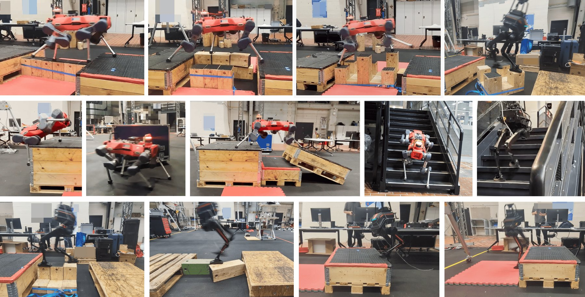
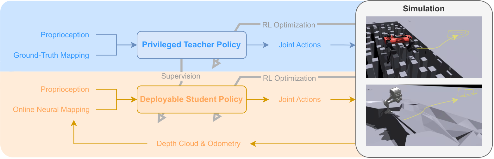
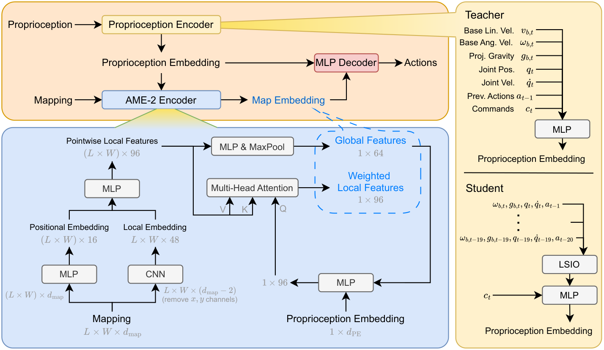
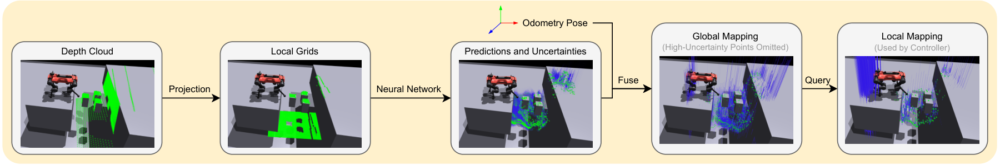
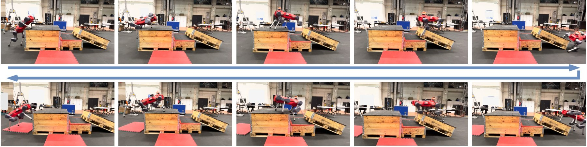
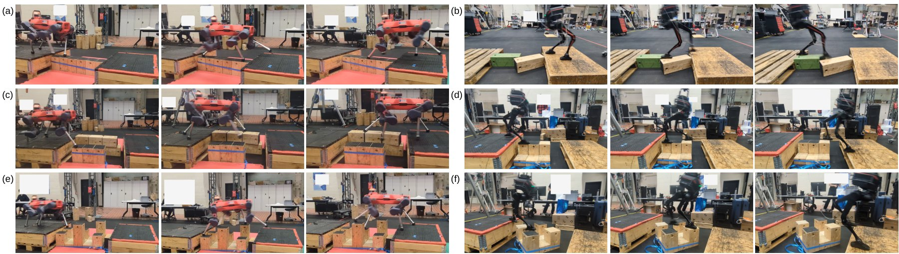
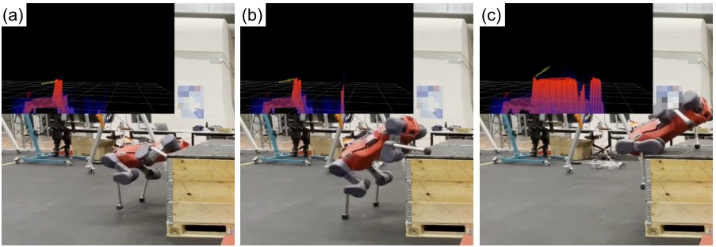
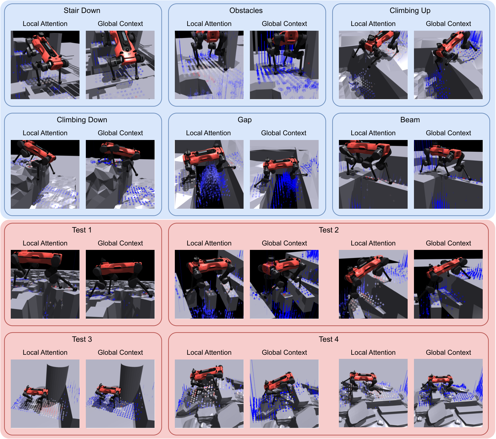
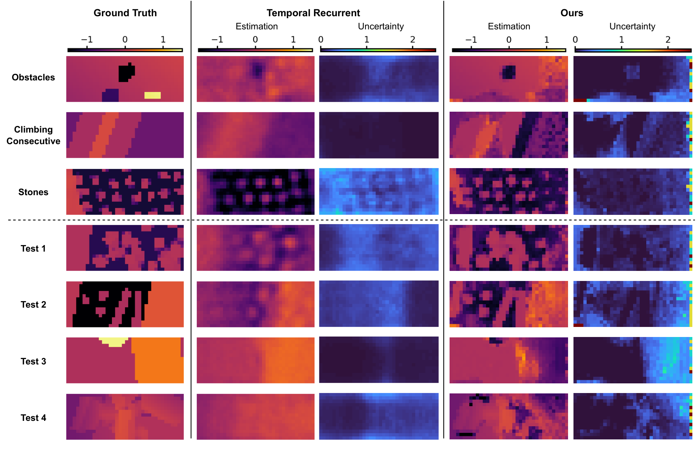

论文信息
- 题目：AME-2: Agile and Generalized Legged Locomotion via Attention-Based Neural Map Encoding
- 作者：Chong Zhang、Victor Klemm、Fan Yang、Marco Hutter
- 状态：arXiv 预印本，2026 年 1 月 13 日提交
- 论文：arXiv:2601.08485
- 机器人：ANYmal-D、LimX Dynamics TRON1
- 关键词：Attention-Based Map Encoding、Goal Reaching、Teacher–Student RL、Uncertainty-Aware Neural Mapping
一句话结论
AME-2 把 AME-1 的“本体状态查询局部落脚区域”扩展成“全局地形上下文决定该关注哪些局部区域”，再配合显式预测高度与不确定性的轻量神经地图、teacher–student 蒸馏和学生自身 RL，使同一框架同时获得跑酷敏捷性、稀疏落脚精度与未见混合地形泛化。

原论文图 1：ANYmal-D 与 TRON1 在跑酷、窄梁、踏石、移动支撑和混合地形上的真机表现。
1. AME-2 不是简单的 AME-1 加大版
AME-1 已经能在局部稀疏地形上精确选择落脚区域，但它有两个结构性限制：
- 注意力 query 只由本体状态决定，看不到整体地形类型；
- 控制器吃的是高度图，却没有把遮挡与传感器噪声的不确定性作为一等信息。
这在复合地形上会暴露：眼前某个局部几何既可能属于踏石，也可能是高平台的边缘。局部 patch 类似，所需技能却不同。AME-2 因而同时重做了控制表示和部署感知。
2. 系统全景：teacher、student 与 mapping

原论文图 2：Teacher 使用完整特权地图；Student 使用与真机一致的在线神经地图，并同时接受蒸馏、表征对齐和 RL 优化。
训练 |
这里最值得注意的是：Student 不是只模仿 Teacher。论文发现只做 action distillation + representation alignment，训练地形表现不错，但未见地形明显退化；让 Student 自己继续接受 RL loss，才把泛化补回来。
3. AME-2 编码器：局部注意力 + 全局上下文

原论文图 3：局部特征通过 attention 精细选点，全局特征通过 max pooling 概括地形类型；二者共同进入策略。
AME-2 仍保留 AME-1 的逐点局部 CNN 与 MHA，但增加一条全局支路：
- Local feature：保留每个网格点与邻域的细节，用于接触级决策；
- Global feature：在空间维度做 max pooling，提取能辨认地形类别或整体结构的稀疏特征；
- 本体特征与全局上下文共同影响局部 attention；
- 局部与全局表示拼接后交给动作 decoder。
可以把两者的区别压缩成：
AME-1: Q = proprioception |
所以 AME-1 更像“根据身体状态找下一脚”，AME-2 还会先形成“我面对的是哪一类整体局面”的判断。
4. 从速度跟踪改成 Goal Reaching
AME-1 接收速度命令；AME-2 改成目标点和目标朝向。这个改变不是表面接口调整。
速度跟踪持续要求机器人匹配瞬时速度，可能压制减速、绕行、蓄力和跳跃。Goal reaching 只关心最终到达，给策略更大的轨迹自由度，因此更容易出现攀爬、跳下和局部导航。
为了无限时长部署，Actor 看见的是经过处理的命令：
- 目标距离最多截断为 2 m；
- 不提供 episode 剩余时间；
- 实际目标超过 2 m 时，训练中随机化观测到的 yaw 命令。
Critic 仍可看到完整目标、相对 yaw 的正余弦与剩余时间。这是一种 asymmetric actor–critic：训练端多看信息，部署端保持可持续控制。
5. 为什么还要 Teacher–Student + RL
Teacher 使用完整地图，负责先学出高质量通用策略。Student 面对真实在线地图的遮挡、空洞、噪声和漂移，训练目标混合三类信号：
- Action distillation：动作接近 Teacher；
- Representation loss：内部表示接近 Teacher；
- RL losses：Student 根据自己实际观测到的状态优化回报。
这个设计承认一个现实：Teacher 的动作在完美地图下可能正确，但 Student 因看不见或不确定，照抄反而危险。RL 允许 Student 学会保守试探、补充观察和从自身误差中恢复。
6. 神经地图：不仅估高度，还要知道自己不知道

原论文图 4：每帧深度点云投影为局部高度格，轻量网络预测高度与方差，再通过里程计融合到全局双层地图。
每帧流程如下：
- 将深度点云投影到局部 2D 网格；
- 同一 cell 有多个点时保留最大高度；
- 浅层 U-Net 同时输出高度均值与 log-variance；
- gated residual 尽量保留明确观测，只重写噪声或遮挡区域；
- 用里程计把局部预测投到全局 elevation + variance 地图；
- 控制器从最新全局地图查询机器人周围网格。
网络使用 -NLL（）训练：
stop-gradient 的权重减弱了模型通过无脑增大方差来逃避困难样本的倾向。训练数据来自 ray tracing，并随机加入裁剪、遮挡、高度截断、缺点、离群点与噪声。每个机器人使用 5400 万帧合成数据，单个地图模型在一张 RTX 4090 上不到 1 小时收敛。
7. Probabilistic Winner-Take-All 融合
论文没有使用普通 Bayesian fusion。原因很实在：如果相机连续十帧都没看见墙后区域，十次一致的“猜测”不能让那里凭空变得可信。
先限制新测量不能突然过度自信：
仅当新观测不比旧地图差太多，或绝对方差足够低时才允许竞争。新预测覆盖旧 cell 的概率为：
随后随机 winner-take-all，而不是做均值融合。它带来四个工程性质：
- 重复遮挡预测不会虚假降低不确定性；
- 相互矛盾的过度自信预测不容易霸占地图；
- 动态支撑一旦获得高置信新观测，可快速更新；
- 算法简单，能放进数千并行环境。
8. 真实跑酷与稀疏地形

原论文图 8：控制器与地图模型训练时都没有见过该组合跑酷场地。

原论文图 9：19 cm 窄梁、浮动弯梁、带缝双梁、高差踏石和菱形踏石。多数具体组合训练中未出现。
系统在两种形态上共用相同奖励和训练设置：
- ANYmal-D zero-shot 完成已有工作中最难的 parkour 与 rubble pile；
- 真机在未见跑酷场地上前后往返；
- ANYmal-D 和 TRON1 通过窄梁、间隙、浮动支撑和未见踏石布局；
- TRON1 能跨越 38 cm 高平台、沟隙、楼梯和粗糙地面；
- 两者都展现对移动、倾斜支撑的恢复能力。
策略推理在机载 Intel i7-8850H 上约 2 ms；地图每帧约 5 ms，其中 ONNX 模型推理约 2.5 ms。论文报告 1000 个 ANYmal-D 并行环境中地图网络推理低于 0.3 ms，说明作者从一开始就把 perception-in-the-loop 训练吞吐量作为设计约束。
9. 主动感知：失败也能成为下一次动作的观测

原论文图 14：第一次攀爬因视野不足失败，但身体接近障碍后看见更高区域；地图保留新信息，第二次立即成功。
这一幕是整篇最能体现 Student 价值的例子：
初始视野不完整 → 把障碍高度判断不足 → 攀爬失败 |
它并不是专门训练的“探头动作”，而是 partial observation、可复用地图、不确定性输入和 RL 共同诱发的主动感知。这里也要克制解读：论文展示的是有说服力的定性案例，不代表已经建立通用信息增益规划器。
10. AME-2 的注意力图怎么看

原论文图 18：红色越强权重越高；局部 attention 聚焦接触相关细节，全局 max-pooling 特征选中少量能描述地形类别的点。细线表示高度不确定性。
这张图把两条支路的分工展示得很清楚：
- Local weights：分布细、随动作变化，像落脚与接触选择；
- Global weights：稀疏地抓住边缘、平台和结构性点，像地形摘要；
- Uncertainty：让网络能区分“这里低”与“这里其实没看清”。
第三点尤其重要。只给补全后的单层高度，策略可能把 hallucination 当真；高度与方差成对输入，策略至少有机会学习在不确定区域减速、换视角或避免激进接触。
11. 最关键的消融数字
11.1 Teacher 架构
| Teacher | 未见 Test 1 | Test 2 | Test 3 | Test 4 | 平均 |
|---|---|---|---|---|---|
| AME-2 | 96.8 | 93.8 | 99.7 | 90.6 | 95.2 |
| AME-1 | 99.2 | 29.2 | 32.2 | 44.1 | 51.2 |
| MoE | 52.9 | 55.3 | 41.0 | 30.8 | 45.0 |
AME-1 在单一稀疏地形 Test 1 甚至更高，但在混合地形 Test 2–4 大幅下降。这几乎直接证明：AME-2 的全局上下文解决的是地形组合与技能切换泛化，不是单纯增加参数。
11.2 Student 设计
| Student | 未见测试平均成功率 |
|---|---|
| AME-2 完整版 | 82.4% |
| Visual Recurrent Student | 51.5% |
| 无 RL loss | 60.7% |
| 无 representation loss | 73.6% |
Visual Recurrent 在障碍跑酷 Test 3 达到 99.8%，高于 AME-2 Student 的 89.1%；论文解释为原始 depth image 提供了更丰富的障碍外观和更长反应范围。AME-2 在稀疏与混合地形总体更强，但不能据此说 elevation map 在所有场景都优于 depth image。
12. 深度图、地图与遮挡问题

原论文图 20：AME-2 在有把握处保留细节，在遮挡区给高不确定性；时序 recurrent baseline 在未见地形上更易丢细节或生成不可靠方差。
这部分与 Parkour in the Wild 的深度问题可以放在一起理解：
- 深度点云缺点或含 artifacts，并不只是随机白噪声；
- 遮挡意味着“没有观测”，不应被当成平地；
- 直接 recurrent completion 容易把训练分布先验写进未知区域；
- AME-2 更愿意保留 unknown，让控制策略显式面对不确定性。
在超过训练随机化范围的测试中，20% 点缺失或 3% artifacts 没有降低平均成功率，反而略升；作者推测更多不确定区域使策略更保守。关闭一个前上方相机后，平均成功率从 82.4% 降到 56.7%，在需要攀高和主动感知的 Test 3 只剩 1.1%。这说明不确定性建模能缓冲退化，但不能创造不存在的视角。
13. 训练与算力成本
- Teacher：80,000 iterations；
- Student：40,000 iterations，前 5,000 iterations 关闭 PPO surrogate loss；
- ANYmal-D：约 60 RTX-4090-days，8 卡并行；
- TRON1：约 30 RTX-4090-days，4 卡并行；
- ANYmal 控制地图：，8 cm 分辨率；
- TRON1 控制地图：，8 cm 分辨率。
地图网络本身训练很快，真正昂贵的是大规模 locomotion RL。复现时应先验证表示和地图，不要直接把完整训练预算作为起点。
14. 局限
论文明确承认：
- 仍是 2.5D elevation map，无法表达多层结构和完全三维通行；
- 严重退化场景如高草、积雪不在能力范围内；
- 动态环境遮挡仍可能让地图失效；
- Goal reaching 对中间运动缺少直接控制，几何上可踩但语义上不可踩的障碍会有问题；
- 未见地形的失败多发生在技能切换，zero-shot 组合泛化仍未解决到底。
此外，不同尺度的同类障碍可能要求完全不同的全身接触模式。当前策略会学出 whole-body skill，却未证明能自动发现“单脚迈、双脚跳、手脚并用”等多层级策略族。
15. AME-1 与 AME-2 的演进总结
| 维度 | AME-1 | AME-2 |
|---|---|---|
| 命令 | 速度跟踪 | 目标点到达 |
| 地图关注 | 本体状态查询局部点 | 全局地形上下文 + 局部注意力 |
| 感知输入 | 2.5D 高度图 | 高度 + 显式方差 |
| 训练 | 两阶段端到端 RL | Teacher–Student、蒸馏、表征对齐 + Student RL |
| 强项 | 稀疏地形精确落脚 | 跑酷敏捷性、混合地形与技能切换泛化 |
| 机器人 | ANYmal-D、GR-1 | ANYmal-D、TRON1 |
16. 最后的理解
AME-2 最有价值的不是某一个模块，而是一套很成熟的分工：
用规则明确、泛化可靠的结构维护时空地图；用小网络估计传感器难以建模的噪声和遮挡；再让 attention policy 从高度、未知性、局部接触细节与全局地形上下文中端到端学动作。
它没有走“全部模块化”或“原始深度到电机全端到端”的极端，而是把结构留在适合结构的地方，把学习放在最难手写的地方。AME-1 让策略学会看下一脚，AME-2 则让它同时理解整段地形，并承认视野之外仍然是未知。